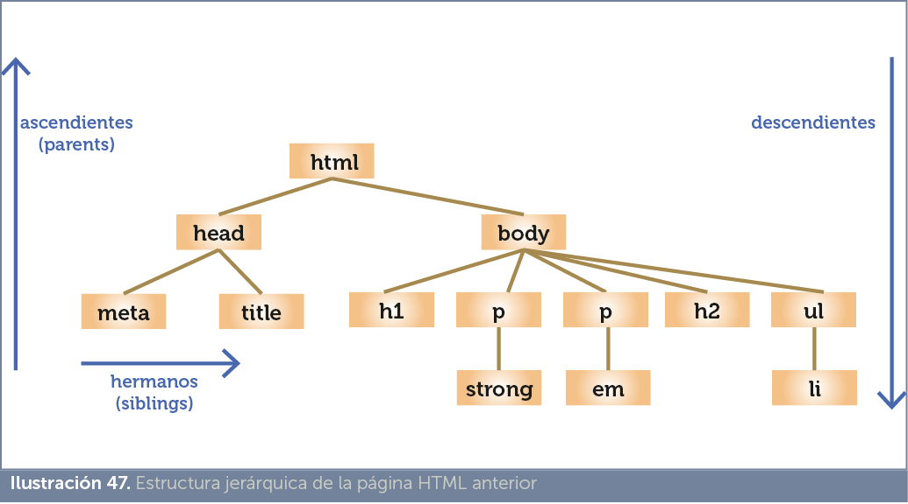

Los estilos CSS se aplican hacia el elemento (o elementos) HTML que indiquemos, por ello es muy importante utilizar correctamente los selectores.
Un selector es el instrumento que proporciona CSS para determinar qué partes de la página web se van a ver afectados por el código CSS que indiquemos.
Podemos indicar los elementos a los que aplicar un determinado código CSS, por ejemplo con el nombre del elemento (por ejemplo, h1), pero también podemos hacer selecciones más elaboradas para seleccionar un elemento concreto mediante su identificador, seleccionar elementos mediante su jerarquía en la página, mediante el valor de sus atributos, etc..
Hacer buenas selecciones nos permitirá conseguir hojas de estilos muy sofisticadas, coherentes y fáciles de mantener. Lo ideal es que HTML y CSS funcionen de forma independiente, de forma que cuando queramos dar formato a nuestros documentos, no tengamos que tocar el código HTML.
Eso solo se puede conseguir estructurando bien a nivel semántico nuestro HTML y dominando el uso de selectores.
Podemos aplicar un estilo a los elementos de un tipo de etiqueta concreta de HTML. Ejemplo:
p{
|
En principio, con ese código todos los elementos de tipo p de la página saldrán de color azul.
Podemos incluso aplicar el estilo a varias etiquetas a la vez:
h1,h2,h3{
|
Los títulos de tipo h1, h2 o h3 saldrán de color azul.
Una de las primeras formas que tiene CSS para diferenciar elementos del mismo tipo (por ejemplo un párrafo de otro) son las clases.
Una clase es un nombre que asignamos a una serie de propiedades y valores CSS. Posteriormente simplemente aplicaremos el nombre de la clase a aquellos elementos que deseamos se modifiquen. La forma de configurar, es:
selector.nombreclase{
propiedad1:valor1; propiedad2:valor2; … } |
Por ejemplo:
p.rojo{
|
Para que un párrafo (necesariamente marcado con la etiqueta p) adopte este estilo (y por lo tanto coloree la letra de color rojo) hay que indicarlo gracias a un atributo presente en todos los elemento HTML; se trata del atributo class. Ejemplo:
<p class=”rojo”> |
Podemos definir la clase sin indicar a qué tipo de elementos se aplica, de ese modo podremos aplicar la clase a cualquier elemento:
.rojo{
|
Cualquier elemento HTML podrá utilizar esa clase. Ejemplo:
<h1 class=”rojo”> </h1> <p class=”rojo”> </p> |
En el ejemplo tanto los elementos h1 como los p de clase rojo, aparecerán con la letra en rojo.
Hay que tener en cuenta que podemos aplicar más de una clase al mismo elemento:
/* CSS */
.rojo{
color:red;
} .borde{
border-bottom:1px solid black;
} ....... ... <h1 class=”rojo borde”> </h1> |
En este último caso se suman al elemento las propiedades y valores de ambas clases definidas. En el caso de que las dos clases modifiquen las mismas propiedades (por ejemplo el color de la letra), se aplican las propiedades de la última clase definida en el código.
También en CSS es posible aplicar formato cuando un determinado elemento tenga dos clases a la vez. Eso se hace usando como selector las dos clases seguidas (sin separarlas con un espacio):
/* CSS */
.rojo.borde{
color:red;
border-bottom:1px solid black;
} ....... ... <h1 class=”rojo”> No tendrá borde ni color rojo </h1> <h1 class=”rojo borde”> </h1> |
La idea es parecida a la de las clases, pero en este caso se usa el valor del atributo id (disponible en todos los elementos del lenguaje HTML). El valor de este atributo no se puede repetir en un documento (aunque los navegadores lo permitan).
Para indicar el valor se usa el símbolo # seguido del identificador.
Ejemplo:
/* CSS */
#parrafo1{
....... ... <p id=”parrafo1”> </p> |
Permite indicar que el estilo definido se aplica a una determinada etiqueta pero cuando esté contenida en otra. Ejemplo:
td p{
|
Se aplica a los elementos de tipo p cuando están dentro de elementos de celda (td). Ejemplo:
<p>Este texto sale normal <p> <table> <tr> <td>Sale normal</td> <td><p>Sale de color rojo</p></td> |
Podemos hacer limitaciones más complejas, por ejemplo:
section article p{
color:red; |
El código anterior se aplicará a los párrafos que estén dentro de un artículo que, a su vez, estén dentro de una sección.
Esta técnica vale para cualquier selector:
section .rojo{
color:red; |
En este caso se colorean de rojo los elementos de clase rojo interiores a un elemento section.
Permite aplicar un estilo a todas las etiquetas del documento. Esto lo consigue el asterisco. Ejemplo:
*{
|
No se suele utilizar de esa forma ya que es demasiado indiscriminada. Pero sí se utiliza para elementos de este tipo:
<!doctype html>
<html lang=”es”> <head> <meta charset=”UTF-8”> <title>Documento</title> <style> table *{
color:red;
} </style> </head> <body> <p>Sale normal</p> <table> <tr> <th>Sale rojo</th> </tr> <tr> <td>Sale rojo</td> </tr> </table> </body> </html> |
Permite colorear en rojo el texto que esté dentro de una tabla; no importará que etiqueta sea la que está dentro de la tabla. Otro ejemplo:
<!doctype html>
<html lang=”es”> <head> <meta charset=”UTF-8”> <title>Documento</title> <style> p *{ color:red;}
</style> |
</head> <body> <p>Sale normal <span>Sale rojo</span></p> </body> </html> |
Ahora sale de color rojo el texto dentro de la etiqueta span.
Permite aplicar estilos a un elemento cuando este tiene un determinado valor sobre un atributo. Para ello se indica el atributo entre corchetes, seguido del signo de igualdad y el valor entre comillas. Ejemplo:
<!doctype html>
<html lang=”es”> <head> <meta charset=”UTF-8”> <title>Documento</title> <style> p[lang=”en”]{ </style> |
Se puede mezclar este tipo de definiciones con clases o definiciones por identificador:
p.clase1[lang=”en”]{ |
En este caso el estilo definido se aplica a párrafos de clase 1 que estén marcados con el valor en en el atributo lang (es decir que estén en inglés).
Se puede incluso utilizar más de un atributo:
p[lang=”en”][spellcheck=”true”]{ |
En este caso se aplica el estilo para los elementos de tipo p que usen los atributos lang y spellcheck con los valores indicados.
Podemos incluso usar varios valores para el mismo atributo:
p[lang=”en”][lang=”fr”]{ |
Aplica la cursiva a párrafos cuyo lenguaje sea inglés o francés.
También podemos indicar el estilo simplemente para los elementos que usen el atributo independientemente de su valor:
<!doctype html>
<html lang=”es”> <head> <meta charset=”UTF-8”> <title>Documento</title> <style> p[lang]{ </style> </head> <body> <p>Este texto se muestra de forma normal</p> <p lang=”en”>This text is shown with italics (se muestra con cursiva)</p> <p lang=”es”>Este texto también se muestra en cursiva</p> </body> |
Por otro lado gracias a CSS3 disponemos de estas posibilidades:
|
sintaxis |
significado |
|
elemento[atributo~=”valor”] |
Elementos que usen el atributo indicado que contengan el valor aunque separado de otros valores por espacios |
|
elemento[atributo$=”valor”] |
Elementos que utilicen el atributo y cuyo contenido finalice con el valor indicado |
|
elemento[atributo^=”valor”] |
Elementos que utilicen el atributo y cuyo contenido empiece con el valor indicado |
|
elemento[atributo|=”valor”] |
Elementos que utilicen el atributo, cuyo contenido empiece con el valor indicado y además ese valor sea una palabra |
|
elemento[atributo*=”valor”] |
Elementos que utilicen el atributo indicado y contengan (en cualquier parte) el atributo indicado |
Ejemplo:
<!doctype html>
<html lang=”es”> <head> <meta charset=”UTF-8”> <title>Documento</title> <style> p[lang*=”es”]{ font-style: italic;
} </style> </head> <body> <p lang=”es-AR”>Este texto se muestra en cursiva </p> <p lang=”es-ES”>Este texto también se muestra en cursiva</p> <p lang=”es”>Incluso este también</p> <p lang=”en”>Este no</p> </body> |

Podemos entender HTML como un documento formado de manera jerárquica, donde hay elementos que contienen otros elementos formando una estructura de árbol. Esta es una parte importante del funcionamiento tanto de una página web HTML como de un documento XML. Esta visión permite seleccionar elementos que casen con una cierta jerarquía.
De este modo esta página web:
<!doctype html> <p>Palencia dispone de numerosos monumentos interesantes. Debido a su importante actividad medieval posee una gran cantidad de edificios religiosos entre los que destaca la <strong>Catedral de Palencia</strong> así como la iglesia de San Miguel con su peculiar torre de defensa y el monumento más conocido de la ciudad: El Cristo del Otero</p> <p>A finales del siglo <em>XIX</em> y principios del <em>XX</em> aparecieron edificios suntuosos y civiles que han embellecido una buena parte de la ciudad, en especial la transitada Calle Mayor.</p> <h2>Edificios religiosos</h2> <ul> </ul> </body> </html> |
Podemos entender que sus elementos forman la Ilustración 47.
En él se observa como los elementos body y head son hijos de html. Mientras que meta y title son hijos de head (luego nietos de html). Los nodos al mismo nivel forman hermanos (h1, h2, p y ul en este esquema son hermanos).
Es posible aplicar un formato cuando un elemento está contenido en otro (es su descendiente).
La forma (vista anteriormente es):
section p{
|
Ese código colorea de rojo el texto contenido en elementos de párrafo (de tipo p) cuando son descendientes de algún elemento section (sea hijo o nieto).
Así usando el CSS anterior este código HTML:
<section> <h1>Título</h1> <p id=”p1”>Sale de color rojo</p> <article> <p id=”p2”>También sale de color rojo</p> </article> </section> |
Se colorean ambos párrafos de tipo p.
En este caso, solo funciona para elementos que son hijos directos. Se hace de esta forma:
section > p{
|
El signo > indica una relación jerárquica de padre a hijo. En el texto HTMl del ejemplo anterior solo se colorearía el primer párrafo:
<section> <h1>Título</h1> <p id=”p1”>Sale de color rojo</p> <article> <p id=”p2”>No sale de color rojo</p> </article> </section> |
|
sintaxis |
significado |
||
|
elemento1 + elemento2 |
El estilo se aplica al elemento2 cuando es hermano del elemento1 y además el elemento1 precede inmediatamente al elemento2. |
||
|
elemento1 ~ elemento2 |
Se aplica al elemento2 cuando es hermano del elemento1 y éste le precede, aunque no sea inmediatamente. |
||
|
elemento:empty |
Se aplica cuando el elemento está vacío |
||
|
elemento:nth-child(número) |
Se aplica al elemento indicado cuando sea el hijo con el número indicado (por ejemplo número sería 3, para el tercer hijo). Se pueden utilizar expresiones más complejas mediante el uso de la variable n para conseguir fórmulas más complejas (la n el navegador la sustituirá automáticamente por cadas número entero para calcular qué filas se seleccionan) Se permite también usa las palabras clave odd (impar) y even (par) Ejemplos de uso:
|
||
|
elemento:nth-last-child(n) |
Funciona igual que el anterior pero cuenta los elementos hijos a partir del último (es decir, el orden de atrás hacia delante). |
||
|
elemento:first-child |
Se aplica al elemento cuando es el primer hijo |
||
|
elemento:last-child |
Se aplica al elemento cuando es el último hijo |
||
|
elemento:only-child |
Se aplica cuando el elemento es el único hijo |
||
|
elemento:first-of-type |
Primer descendiente de su tipo |
||
|
elemento:last-of-type |
Último descendiente de su hijo |
||
|
elemento:nth-of-type(n) |
Funciona como nth-child, pero se refiere al número de hijo de ese tipo. No cuenta hijos, sino hijos del tipo indicado. Ejemplo:
|
||
|
elemento:nth-last-of-type(n) |
Como el anterior pero cuenta n desde el final. |
||
|
elemento:only-of-type |
Se aplica cuando el elemento es el único hijo de ese tipo |
Ejemplo de uso de formatos jerárquicos
<style>
</style> </head> |
|
<body> <section> <h1>Este es un título</h1> <p>Párrafo que sale de color rojo</p> <p>Párrafo que sale normal</p> <h1>Otro titulo</h1> <address>C/ Mayor...</address> <p>Este sale normal</p> </section> </body> |
En el ejemplo, el operador +, hace que se coloree la letra de color rojo, para todos los párrafos de tipo p que estén justo detrás de un párrafo h1. Por ello se colorea solo el párrafo con el texto Párrafo que sale de color rojo ya que es el único que cumple la condición. Sin embargo si se hubiera definido de esta forma:
<style> h1 ~ p{
color:red;
} </style> |
Ahora todos los párrafos de tipo p aparecen de color rojo ya que no es necesario que estén inmediatamente detrás de un h1, basta con que sean hermanos; es decir, que estén dentro del mismo contenedor y h1 aparezca antes que p.
Ejemplo de uso de nth-child:
<html lang=”es”> <head> <meta charset=”UTF-8”> <title>Prueba nth-child</title> <style> table{
width:450px;
border-collapse:collapse; } td,th{
border:1px solid black;
}
} </style> </head> |
|
<body> <table> <tr> <th> </th> <td> </td> <td> </td> <td> </td> </tr> <tr> <th> </th> <td> </td> <td> </td> <td> </td> </tr> </table> </body> |
El resultado del código es:
|
|
|
|
|
|
|
|
|
|
La segunda columna sale con fondo rojo, ya que en ella la etiqueta td es el segundo hijo de la etiqueta tr. Pero si el código CSS fuera este:
<style> table{
width:450px;
border-collapse:collapse; } td,th{
border:1px solid black;
}
} |
El resultado sería:
|
|
|
|
|
|
|
|
|
|
Porque ahora se colorea la etiqueta td cuando es el segundo hijo de su tipo (la primera columna es de tipo th y no td).
Podemos incluso hacer combinaciones avanzadas. Ejemplo:
ul > li + li {
|
Se aplica a los elementos li que estén dentro de elementos ul y además estén inmediatamente precedidos por otro elemento li. Ejemplo:
<ul> <li>Yo salgo normal</li> <li>Yo salgo verde</li> <li>Yo también salgo verde</li> </ul> |
Las pseudoclases permiten asociar estilos a un selector cuando le ocurre una determinada circunstancia. Inicialmente las pseudoclases se aplicaban a los enlaces (elemento a), pero ahora se aplican a cualquier elemento. Las pseudoclases clásicas son:
Ejemplo:
<style> a{
text-decoration:none;
} a:visited{
color:gray;
} a:hover{
text-decoration:underline;
} </style> |
En el ejemplo los enlaces a los que se aplique esta hoja de estilo saldrán sin subrayar, si están visitados saldrán de color gris y si se arrima el ratón en ellos será cuando se muestren subrayados.
Estas pseudoclases permiten un cierto dinamismo en la página HTML. Actualmente además es posible utilizarlas en otros elementos distintos de la etiqueta a (como p, div, etc.) lo que da enormes posibilidades.
CSS3 ha incorporado muchas más pseudoclases:
|
pseudoclase |
selecciona... |
||
|
:focus |
Cuando el elemento obtiene el foco, es decir cuando el elemento ha capturado la entrada del teclado. Muy útil en formularios. |
||
|
:lang(código) |
Se aplica cuando el elemento esté marcado con el lenguaje indicado por su código de idioma en el atributo lang (es para español, en para inglés,…) |
||
|
:enabled |
Cuando el elemento está habilitado (útil en formularios) |
||
|
:disabled |
Cuando el elemento está deshabilitado (útil en formularios) |
||
|
:checked |
En controles de formulario de tipo radio o checkbox, cuando el elemento pasa a estar activado. |
||
|
:in-range |
En controles de formulario (de tipo input) cuando el valor que contienen está dentro de rango. Esto significa que los atributos min y max (que solo se aplican a algunos tipos de controles input) han delimitado valores el contenido del control cumple. No funciona en Internet Explorer. |
||
|
:out-of-range |
Al revés del anterior. Aplica el contenido CSS a controles cuyos valores están fuera de rango. |
||
|
:target |
Se aplica cuando el elemento al que se refiere ha sido destino de un enlace. Ejemplo:
Cuando hagamos clic sobre el enlace ir a la introducción, el título Introducción se pondrá de color azul. |
||
|
:valid |
Controles de formulario que contienen valores válidos (lo serán o no dependiendo del tipo de elemento). Por ejemplo no será válido un texto en un cuadro input de tipo numérico (number). |
||
|
:invalid |
Inverso al anterior. Es decir, selecciona controles cuyos valores no sean válidos. |
||
|
:read-only |
Controles de formulario que están en modo de solo lectura (debido a usar el atributo HTMl readonly). No funciona en Internet Explorer y en Mozilla Firefox solo si se usa con el prefijo -moz- |
||
|
:read-write |
Inverso al anterior. Controles que se puedan leer y escribir. |
||
|
:required |
Controles de formulario que están marcados (gracias al atributo HTMl required) para ser rellenados obligatoriamente. |
||
|
:optional |
Contrario al anterior. Controles que no están obligados a ser rellenados. |
||
|
:default |
Selecciona los elementos de un formulario que son las opciones marcadas por defecto. Por ejemplo el botón de radio que actualmente esté activado. No funciona en Internet Explorer. |
||
|
:first-line |
La primera línea del elemento. |
||
|
:first-letter |
La primera letra del elemento. |
||
|
:before |
Contenido anterior al elemento. Siempre se suele usar con la propiedad content para añadir contenido al elemento. Ejemplo:
Coloca la imagen de una flecha delante del párrafo |
||
|
:after |
Para indicar contenido después del elemento. |
||
|
:lang(codigoLenguaje) |
Selecciona los elementos que hayan utilizado el atributo lang con el código indicado. Es equivalente a [lang=”codigoLenguaje”]. |
||
|
:not(selector) |
Se aplica cuando el elemento no cumple ser del tipo indicado por el selector dentro de la palabra not. Ejemplo:
El color rojo se aplicará al contenido de los elementos div salvo que estén dentro de elementos p. Otro ejemplo:
Se aplica a todos los párrafos excepto al primero de cada grupo de hermanos. |
||
|
:root |
Solo tiene utilidad cuando se aplica CSS sobre documentos XML. Aplica el estilo al elemento cuando es raíz del documento. En un documento HTML la raíz es siempre el elemento html, por lo que carece de utilidad. |
||
|
:dir(direccion) |
Aunque es estándar, no lo soporta aun casi ningún navegador. Selecciona en base a la dirección en la que se escribe el texto. Esa dirección puede tomar el valor ltr (izquierda a derecha) o rtl (derecha a izquierda) |
||
|
:fullscreen |
Selector interesante, pero experimental que se aplica a los elementos que se muestran cuando la página HTML está en modo de pantalla completa. Todos los navegadores actuales la soportan pero si se usa el prefijo del navegador (por ejemplo -moz-fullscreen). Solo el navegador Edge de Microsoft la reconoce sin prefijo. |
||
|
:left |
Se aplica cuando la página se imprime. Selecciona la página izquierda (en impresión a doble cara). |
||
|
:right |
Se aplica cuando la página se imprime. Selecciona la página derecha (en impresión a doble cara). |
Las pseudoclases se pueden combinar, de modo que se pueden construir cosas como:
input:focus:hover {
|
Se pondrá color de fondo amarillo, cuando el cuadro de tipo input tenga el foco y el ratón pase por encima de él. O cosas más complejas como:
input.clase1:focus:hover[type=”password”] { |
En este caso se aplica el fondo amarillo cuando el cursor esté encima de un control de texto de tipo contraseña que además tenga el foco y sea de clase1.
Se trata una mejora de CSS3 que permite aplicar estilos a elementos, aunque estos no existan en el árbol de elementos del documento. La razón para que un elemento no esté en el árbol es que no existe en el código hasta que se ejecute, por ejemplo, una determinada sentencia en lenguaje JavaScript.
Los pseudoelementos utilizan los símbolos :: en lugar de simplemente : como ocurre con las pseudoclases.
|
pseudoelemento |
significado |
|
::first-line |
Primera línea del elemento |
|
::first-letter |
Primera letra del elemento |
|
::after |
Se aplica para colocar código tras el elemento |
|
::before |
Se aplica para colocar código antes del elemento |
|
::selection |
Se aplica al texto seleccionado del elemento. En el caso de los navegadores de Mozilla, requiere usar el prefijo -moz- |
|
::placeholder |
Pseudoclase experimental (solo funciona si se usa el prefijo de cada navegador) que se aplica al texto de tipo placeholder de los controles de los formularios. |
Hasta la versión 9, Internet Explorer no ha aplicado los selectores avanzados pertenecientes a CSS3. El resto de navegadores les incorporó mucho antes.
No es el único caso de aplicación tardía. Internet Explorer es, sin duda, el navegador que más está tardando en incorporar mejoras de CSS3 que los otros navegadores llevan implementando desde hace un tiempo. Pero el resto también tardan en aplicar estas mejoras de CSS (lógico puesto que CSS3 no deja de crecer).
Su sucesor, Edge, es más respetuoso con CSS3. Pero la cuestión es que todavía hay bastantes usuarios que utilizan Internet Explorer.
También puede ocurrir que algunos navegadores acepten algunas cosas y otras no. Por ejemplo que acepten la pseudoclase avanzada ::selection y sim embargo no reconozcan :not. Esto complica enormemente el trabajo del diseñador de páginas web.
Las últimas versiones de todos los navegadores ya incorporan la mayoría de los selectores.
Aunque a veces hay que comprobar que no se requiere prefijo. Es el caso del selector ::selection, solo los últimos navegadores le reconocen y en el caso de Firefox hay que acompañarle del prefijo –moz-
Ejemplo:
p::-moz-selection{
background-color:red;
} |
En definitiva, hay que utilizar con cautela este tipo de selectores.
Debido a la falta de compatibilidad tan grande de Internet Explorer con CSS3, es habitual usar código concreto para este navegador (y que solo queremos que ejecute este navegador) para lo cual se utiliza este truco:
<!--[if lt IE 9]>
..código ignorado por todos los navegadores salvo por los Internet Explorer anteriores a la versión 9
<![endif]-->
|